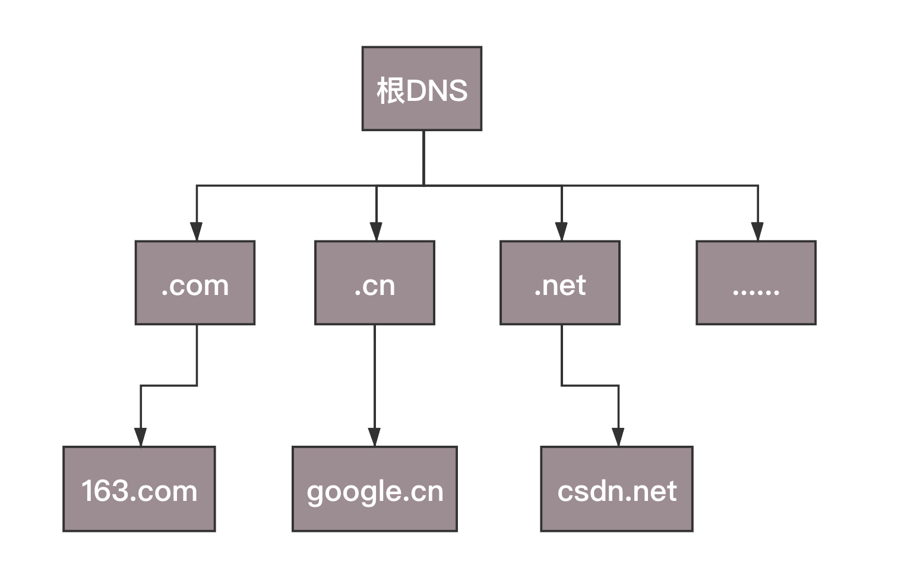

- 00 开篇词 想成为技术牛人？先搞定网络协议！.md
- 01 为什么要学习网络协议？.md
- 02 网络分层的真实含义是什么？.md
- 03 ifconfig：最熟悉又陌生的命令行.md
- 04 DHCP与PXE：IP是怎么来的，又是怎么没的？.md
- 05 从物理层到MAC层：如何在宿舍里自己组网玩联机游戏？.md
- 06 交换机与VLAN：办公室太复杂，我要回学校.md
- 07 ICMP与ping：投石问路的侦察兵.md
- 08 世界这么大，我想出网关：欧洲十国游与玄奘西行.md
- 09 路由协议：西出网关无故人，敢问路在何方.md
- 10 UDP协议：因性善而简单，难免碰到“城会玩”.md
- 11 TCP协议（上）：因性恶而复杂，先恶后善反轻松.md
- 12 TCP协议（下）：西行必定多妖孽，恒心智慧消磨难.md
- 13 套接字Socket：Talk is cheap, show me the code.md
- 14 HTTP协议：看个新闻原来这么麻烦.md
- 15 HTTPS协议：点外卖的过程原来这么复杂.md
- 16 流媒体协议：如何在直播里看到美女帅哥？.md
- 17 P2P协议：我下小电影，99%急死你.md
- 18 DNS协议：网络世界的地址簿.md
- 19 HttpDNS：网络世界的地址簿也会指错路.md
- 20 CDN：你去小卖部取过快递么？.md
- 21 数据中心：我是开发商，自己拿地盖别墅.md
- 22 VPN：朝中有人好做官.md
- 23 移动网络：去巴塞罗那，手机也上不了脸书.md
- 24 云中网络：自己拿地成本高，购买公寓更灵活.md
- 25 软件定义网络：共享基础设施的小区物业管理办法.md
- 26 云中的网络安全：虽然不是土豪，也需要基本安全和保障.md
- 27 云中的网络QoS：邻居疯狂下电影，我该怎么办？.md
- 28 云中网络的隔离GRE、VXLAN：虽然住一个小区，也要保护隐私.md
- 29 容器网络：来去自由的日子，不买公寓去合租.md
- 30 容器网络之Flannel：每人一亩三分地.md
- 31 容器网络之Calico：为高效说出善意的谎言.md
- 32 RPC协议综述：远在天边，近在眼前.md
- 33 基于XML的SOAP协议：不要说NBA，请说美国职业篮球联赛.md
- 34 基于JSON的RESTful接口协议：我不关心过程，请给我结果.md
- 35 二进制类RPC协议：还是叫NBA吧，总说全称多费劲.md
- 36 跨语言类RPC协议：交流之前，双方先来个专业术语表.md
- 37 知识串：用双十一的故事串起碎片的网络协议（上）.md
- 38 知识串：用双十一的故事串起碎片的网络协议（中）.md
- 39 知识串：用双十一的故事串起碎片的网络协议（下）.md
- 40 搭建一个网络实验环境：授人以鱼不如授人以渔.md
- 加餐1 创作故事：我是如何创作“趣谈网络协议”专栏的？.md
- 协议专栏特别福利 答疑解惑1期.md
- 协议专栏特别福利 答疑解惑2期.md
- 协议专栏特别福利 答疑解惑3期.md
- 协议专栏特别福利 答疑解惑4期.md
- 协议专栏特别福利 答疑解惑5期.md
- 结束语 放弃完美主义，执行力就是限时限量认真完成.md
18 DNS协议：网络世界的地址簿
前面我们讲了平时常见的看新闻、支付、直播、下载等场景，现在网站的数目非常多，常用的网站就有二三十个，如果全部用IP地址进行访问，恐怕很难记住。于是，就需要一个地址簿，根据名称，就可以查看具体的地址。
例如，我要去西湖边的“外婆家”，这就是名称，然后通过地址簿，查看到底是哪条路多少号。
DNS服务器
在网络世界，也是这样的。你肯定记得住网站的名称，但是很难记住网站的IP地址，因而也需要一个地址簿，就是DNS服务器。
由此可见，DNS在日常生活中多么重要。每个人上网，都需要访问它，但是同时，这对它来讲也是非常大的挑战。一旦它出了故障，整个互联网都将瘫痪。另外，上网的人分布在全世界各地，如果大家都去同一个地方访问某一台服务器，时延将会非常大。因而，DNS服务器，一定要设置成高可用、高并发和分布式的。
于是，就有了这样树状的层次结构。
- 根DNS服务器 ：返回顶级域DNS服务器的IP地址
-
顶级域DNS服务器：返回权威DNS服务器的IP地址
-
权威DNS服务器 ：返回相应主机的IP地址
DNS解析流程
为了提高DNS的解析性能，很多网络都会就近部署DNS缓存服务器。于是，就有了以下的DNS解析流程。
-
电脑客户端会发出一个DNS请求，问www.163.com的IP是啥啊，并发给本地域名服务器 (本地DNS)。那本地域名服务器 (本地DNS) 是什么呢？如果是通过DHCP配置，本地DNS由你的网络服务商（ISP），如电信、移动等自动分配，它通常就在你网络服务商的某个机房。
-
本地DNS收到来自客户端的请求。你可以想象这台服务器上缓存了一张域名与之对应IP地址的大表格。如果能找到 www.163.com，它就直接返回IP地址。如果没有，本地DNS会去问它的根域名服务器：“老大，能告诉我www.163.com的IP地址吗？”根域名服务器是最高层次的，全球共有13套。它不直接用于域名解析，但能指明一条道路。
-
根DNS收到来自本地DNS的请求，发现后缀是 .com，说：“哦，www.163.com啊，这个域名是由.com区域管理，我给你它的顶级域名服务器的地址，你去问问它吧。”
-
本地DNS转向问顶级域名服务器：“老二，你能告诉我www.163.com的IP地址吗？”顶级域名服务器就是大名鼎鼎的比如 .com、.net、 .org这些一级域名，它负责管理二级域名，比如 163.com，所以它能提供一条更清晰的方向。
-
顶级域名服务器说：“我给你负责 www.163.com 区域的权威DNS服务器的地址，你去问它应该能问到。”
-
本地DNS转向问权威DNS服务器：“您好，www.163.com 对应的IP是啥呀？”163.com的权威DNS服务器，它是域名解析结果的原出处。为啥叫权威呢？就是我的域名我做主。
-
权威DNS服务器查询后将对应的IP地址X.X.X.X告诉本地DNS。
-
本地DNS再将IP地址返回客户端，客户端和目标建立连接。
至此，我们完成了DNS的解析过程。现在总结一下，整个过程我画成了一个图。

负载均衡
站在客户端角度，这是一次DNS递归查询过程。因为本地DNS全权为它效劳，它只要坐等结果即可。在这个过程中，DNS除了可以通过名称映射为IP地址，它还可以做另外一件事，就是负载均衡。
还是以访问“外婆家”为例，还是我们开头的“外婆家”，但是，它可能有很多地址，因为它在杭州可以有很多家。所以，如果一个人想去吃“外婆家”，他可以就近找一家店，而不用大家都去同一家，这就是负载均衡。
DNS首先可以做内部负载均衡。
例如，一个应用要访问数据库，在这个应用里面应该配置这个数据库的IP地址，还是应该配置这个数据库的域名呢？显然应该配置域名，因为一旦这个数据库，因为某种原因，换到了另外一台机器上，而如果有多个应用都配置了这台数据库的话，一换IP地址，就需要将这些应用全部修改一遍。但是如果配置了域名，则只要在DNS服务器里，将域名映射为新的IP地址，这个工作就完成了，大大简化了运维。
在这个基础上，我们可以再进一步。例如，某个应用要访问另外一个应用，如果配置另外一个应用的IP地址，那么这个访问就是一对一的。但是当被访问的应用撑不住的时候，我们其实可以部署多个。但是，访问它的应用，如何在多个之间进行负载均衡？只要配置成为域名就可以了。在域名解析的时候，我们只要配置策略，这次返回第一个IP，下次返回第二个IP，就可以实现负载均衡了。
另外一个更加重要的是，DNS还可以做全局负载均衡。
为了保证我们的应用高可用，往往会部署在多个机房，每个地方都会有自己的IP地址。当用户访问某个域名的时候，这个IP地址可以轮询访问多个数据中心。如果一个数据中心因为某种原因挂了，只要在DNS服务器里面，将这个数据中心对应的IP地址删除，就可以实现一定的高可用。
另外，我们肯定希望北京的用户访问北京的数据中心，上海的用户访问上海的数据中心，这样，客户体验就会非常好，访问速度就会超快。这就是全局负载均衡的概念。
示例：DNS访问数据中心中对象存储上的静态资源
我们通过DNS访问数据中心中对象存储上的静态资源为例，看一看整个过程。
假设全国有多个数据中心，托管在多个运营商，每个数据中心三个可用区（Available Zone）。对象存储通过跨可用区部署，实现高可用性。在每个数据中心中，都至少部署两个内部负载均衡器，内部负载均衡器后面对接多个对象存储的前置服务器（Proxy-server）。

-
当一个客户端要访问object.yourcompany.com的时候，需要将域名转换为IP地址进行访问，所以它要请求本地DNS解析器。
-
本地DNS解析器先查看看本地的缓存是否有这个记录。如果有则直接使用，因为上面的过程太复杂了，如果每次都要递归解析，就太麻烦了。
-
如果本地无缓存，则需要请求本地的DNS服务器。
-
本地的DNS服务器一般部署在你的数据中心或者你所在的运营商的网络中，本地DNS服务器也需要看本地是否有缓存，如果有则返回，因为它也不想把上面的递归过程再走一遍。
-
至 7. 如果本地没有，本地DNS才需要递归地从根DNS服务器，查到.com的顶级域名服务器，最终查到 yourcompany.com 的权威DNS服务器，给本地DNS服务器，权威DNS服务器按说会返回真实要访问的IP地址。
对于不需要做全局负载均衡的简单应用来讲，yourcompany.com的权威DNS服务器可以直接将 object.yourcompany.com这个域名解析为一个或者多个IP地址，然后客户端可以通过多个IP地址，进行简单的轮询，实现简单的负载均衡。
但是对于复杂的应用，尤其是跨地域跨运营商的大型应用，则需要更加复杂的全局负载均衡机制，因而需要专门的设备或者服务器来做这件事情，这就是全局负载均衡器（GSLB，Global Server Load Balance）。
在yourcompany.com的DNS服务器中，一般是通过配置CNAME的方式，给 object.yourcompany.com起一个别名，例如 object.vip.yourcomany.com，然后告诉本地DNS服务器，让它请求GSLB解析这个域名，GSLB就可以在解析这个域名的过程中，通过自己的策略实现负载均衡。
图中画了两层的GSLB，是因为分运营商和地域。我们希望不同运营商的客户，可以访问相同运营商机房中的资源，这样不跨运营商访问，有利于提高吞吐量，减少时延。
-
第一层GSLB，通过查看请求它的本地DNS服务器所在的运营商，就知道用户所在的运营商。假设是移动，通过CNAME的方式，通过另一个别名 object.yd.yourcompany.com，告诉本地DNS服务器去请求第二层的GSLB。
-
第二层GSLB，通过查看请求它的本地DNS服务器所在的地址，就知道用户所在的地理位置，然后将距离用户位置比较近的Region里面，六个内部负载均衡（SLB，Server Load Balancer）的地址，返回给本地DNS服务器。
-
本地DNS服务器将结果返回给本地DNS解析器。
-
本地DNS解析器将结果缓存后，返回给客户端。
-
客户端开始访问属于相同运营商的距离较近的Region 1中的对象存储，当然客户端得到了六个IP地址，它可以通过负载均衡的方式，随机或者轮询选择一个可用区进行访问。对象存储一般会有三个备份，从而可以实现对存储读写的负载均衡。
小结
好了，这节内容就到这里了，我们来总结一下：
-
DNS是网络世界的地址簿，可以通过域名查地址，因为域名服务器是按照树状结构组织的，因而域名查找是使用递归的方法，并通过缓存的方式增强性能；
-
在域名和IP的映射过程中，给了应用基于域名做负载均衡的机会，可以是简单的负载均衡，也可以根据地址和运营商做全局的负载均衡。
最后，给你留两个思考题：
-
全局负载均衡为什么要分地址和运营商呢？
-
全局负载均衡使用过程中，常常遇到失灵的情况，你知道具体有哪些情况吗？对应应该怎么来解决呢？
我们的专栏更新过半了，不知你掌握得如何？每节课后我留的思考题，你都有没有认真思考，并在留言区写下答案呢？我会从已发布的文章中选出一批认真留言的同学，赠送学习奖励礼券和我整理的独家网络协议知识图谱。
欢迎你留言和我讨论。趣谈网络协议，我们下期见！
© 2019 - 2023 Liangliang Lee. Powered by Vert.x and hexo-theme-book.